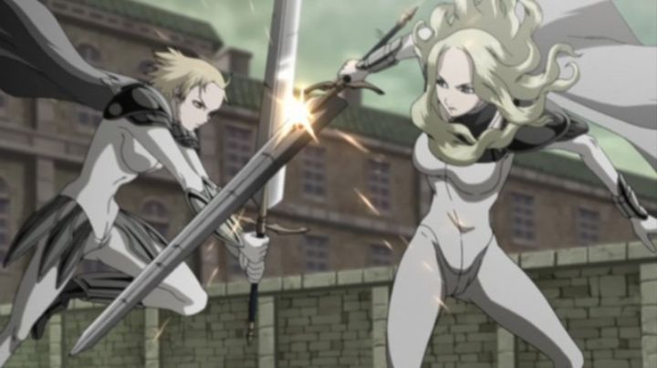

The 2007 series "Claymore" might seem like just another action-fantasy anime, at a time when dark violent anime was commonplace. But over a decade later, and the show still comes up in conversation. I didn't get around to watching it until almost 15 years later, and although it definitely shows its age, it also has a rich enough atmosphere to hold up. My immediate thoughts went to "Berserk," or the novel-game franchise "The Witcher," which is high praise. Fantasy anime with swords and magic might be easy to come by, but "dark fantasy" with a European setting is a bit more rare. Set in a medival-Scottish-European world, "Claymore" manages to include violence, revenge, torture, tragedy, and even the threat of rape, but never quite goes too far in any one element. When limbs fly and when the cast is almost entirely female, it's easy to go too far to the point of being distasteful, and many anime are guilty of this. In this case, there's no doubt that "Claymore" is an adult-fantasy, but is also mature enough to hold back, lest it scare off any potential audience that couldn't stomach it. In this world, there exist demonic-monsters known as Yoma. They can change their shape to hide among townspeople, but unnaturally strong and fast, their true forms are ferocious when they feed on human flesh. The only ones that can kill them are the Claymore, specialized female knights with pale skin, silver hair and eyes, and massive swords. The Claymore themselves are half-Yoma, a strength they can tap into, but if they go too far, they reach a point of no return, becoming the things they live to kill. Each knight typically works alone, traveling from town to town, with distrust from the humans that contract her for help. They accept payment for their services, collected by the "men in black" that manage the organization they work for. The story and its intrigue come from two parts: one is the constant threat that the individual Claymore could turn, resulting in their tragic death carried out by a comrade. The other is the characterization of the individual Claymores, each cold, carrying out their duty without question, with varying degrees of respect (or lack thereof) to their fellow knights and the humans they are restricted from harming. That plays into the mystery of the organization they work for: who exactly are they? How do Claymore come to be? Why are they all female? There are dark secrets behind those answers, slowly revealed throughout the series. Even though the different Claymore look similar to each other, their personalities and histories are different enough to help color the rich setting. Impressively, each female knight is portrayed respectfully with a lack of sexualization. Yes, that plays a part (a description to the transformation from Claymore to Yoma is compared to ectasy), but it avoids any gross fanservice in their faces or body proportions or clothing. Each knight looks and acts like mature adults. And don't assume that any of them are safe to survive to the end of the story; despite the ability to heal quickly, limbs are permanetly lost by key characters before the 26-episodes are halfway through.  "Claymore"'s strength is in its setting and lore, but not necessarily in storytelling. In the first several episodes, we are introduced to Clare, the lead character and stoic Claymore, and how she meets... an annoying human sidekick named Rocky (officially spelled Raki in the manga). A boy whose family were eaten by Yoma, he refuses to leave Claire when she ventures to the next town, and she reluctantly allows him to tag along as her cook. It seems to be a common trait for dark fantasy stories to have some annoying Jar-Jar-Binks-like side-character, clinging to the heroes as a fifth wheel, a poor attempt at either comic relief or humanization; even if Rocky grows himself during the story, his presence is urksome. The series also pauses and takes several episodes to portray Claire's backstory, when she herself first met another Claymore that influences her. Perhaps too much time was spent on that, and the transition to and from that arc is sudden, as if stopping to watch a second season of a show in the middle of watching the first. So it's not until nearly halfway through the series that things get interesting, and much more watchable. I don't like recommending anime that requires you to watching several episodes "before it gets good," but that's the way it is here. I don't know if a different director, or better writing, or adapting the source manga better (which was only half-finished publication at the time the anime aired) would have improved things. Visually, "Claymore" features character designs as typical by studio Madhouse. The Claymore knights themselves are distinctive, and the Yoma designs are also appropriately creepy and intimidating. Animation however is lacking, relying on still shots with quick camera movements to portray action, and when action is animated, not having any choreography beyond a strong swing of a sword. It's worth noting that while a Bluray is available, the anime looks soft, and that there's no purpose to watch anything better than the original DVD release.The background musical score is good (think flutes across the highlands, or a creepy low theme just before a Yoma fight begins), as is the ending theme, although both the opening and ending theme also reveal the show's age. Funimation's English dub is decent and capable, only a problem when Rocky appears (which becomes less of an issue as the story progresses). Aspects of "Claymore" (specifically the animation, some music choices and storytelling) are certainly dated, making the series a little difficult to discover by now. But the core of the story and its lore are solid, and is a great example of dark-fantasy done well, even if not exceptionally well.
- "Ani" More reviews can be found at : https://2danicritic.github.io/ Previous review: review_City_Hunter_-_Shinjuku_Private_Eyes Next review: review_Cleopatra